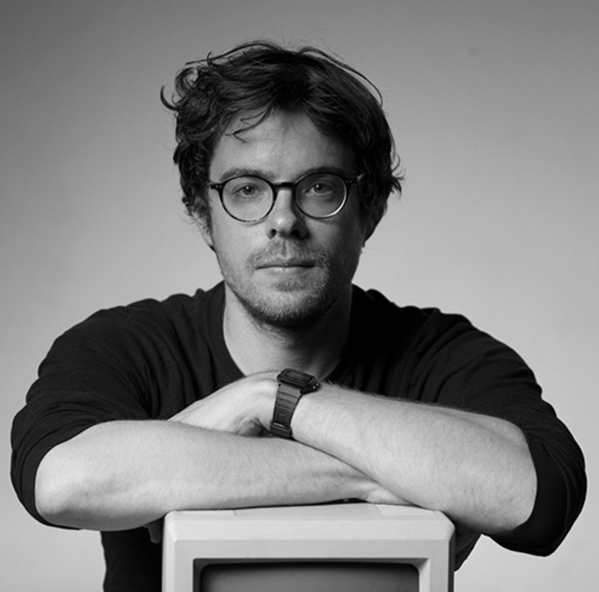

Tjerk
maakt kleine en persoonlijke (web)applicaties
Dat wil ik wel.
| Ik vind dat je:
Dingen moet ontwerpen die werken voor iedereen
Een beetje gek mag doen
Dingen simpel moet maken, maar dat is dan weer moeilijk
Dat alles kan, maar niks hoeft
Tjerk
x
Tjerk
(spreekt uit als `Tjairk` 使用)
Is een ontwerper, programmeur en docent. Op dit moment is hij 34 jaar oud en woont in Leeuwarden.

Figuur 1: Het hoofd van Tjerk